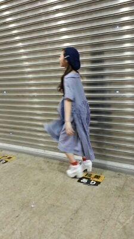
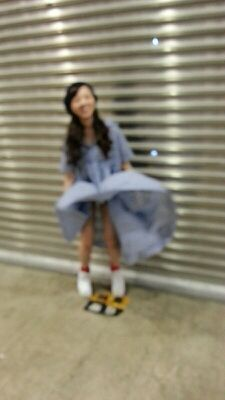

| 2014/08 06 Wed | もう10th目の活動か〜早い ね〜(・∀・)人(・ ∀・)ろってぃ−.♪ |
こんにちわ！ろってぃーです.☆//
今 雑誌の撮影が終わりました..*
先週の『乃木坂って、どこ？』は10thの選抜発表でした\(#^.^#)/
見てくれたかな♪？？
まひろは10th// アンダーメンバーとして 自分に必要な物をいっぱい得て 努力して頑張りたいと思います！
今、歌って踊ってTVに出ることと、 liveたくさんやって 自分のパフォーマンスに力をつけること. どっちが 今のろってぃーに大切かと考えると、、、、、
どうですかね ？
人それぞれ意見は違うと思うんですけど、
TVでろってぃーのこといっぱい見たい気持ちもあるけど、ろってぃーは ライブ向きやから...ってRotty夢の方は思ってる人が多いみたいです..*
ぁ、もちろん選抜メンバーに入りたい気持ちもあります.
選抜に選ばれなくて、ろってぃー今病んでるんじゃないか？と思ってますか？？
そりゃあ、 らりんもblogで書いてましたが、
いつも笑ってるし、悩みなさそうって言われますが、笑ってるぶん悩みはい〜っぱいあります.
毎日毎日、悩みます(´；ω；｀)
あたる場所がなくて、口に出して吐き出せなくて、どうしようってなって、一人でベッドの上で泣きます..
でも その悔しさをばねに頑張ります.
もうすぐ始まる 全国ツアー, アンダーライブと ライブいっぱいひかえてるんで、まひろは誰よりも元気いっぱいに ステージの上で輝けるよう頑張ります


ま〜にま〜に む〜に えるっ.♪!!! えい
)))

きゃあっ.
えっち 見ないで (*ノ▽ノ)あは
マリリンモンロ−..*

のし..*
コメント(312)
2014/08/06 15:54